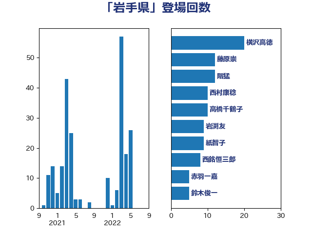

単語「岩手県」

| 横沢高徳 | 立憲民主党 | 20 回 |
| 藤原崇 | 自由民主党 | 12 回 |
| 階猛 | 立憲民主党 | 12 回 |
| 西村康稔 | 自由民主党 | 10 回 |
| 高橋千鶴子 | 日本共産党 | 10 回 |
| 岩渕友 | 日本共産党 | 9 回 |
| 紙智子 | 日本共産党 | 9 回 |
| 西銘恒三郎 | 自由民主党 | 8 回 |
| 赤羽一嘉 | 公明党 | 5 回 |
| 鈴木俊一 | 自由民主党 | 5 回 |
| 小沢雅仁 | 立憲民主党 | 4 回 |
| 岡本あき子 | 立憲民主党 | 3 回 |
| 笠井亮 | 日本共産党 | 3 回 |
| 萩生田光一 | 自由民主党 | 3 回 |
| 近藤和也 | 立憲民主党 | 3 回 |
| 勝俣孝明 | 自由民主党 | 2 回 |
| 小泉進次郎 | 自由民主党 | 2 回 |
| 平沢勝栄 | 自由民主党 | 2 回 |
| 熊谷裕人 | 立憲民主党 | 2 回 |
| 石原正敬 | 自由民主党 | 2 回 |
| 神田潤一 | 自由民主党 | 2 回 |
| 美延映夫 | 日本維新の会 | 2 回 |
| たがや亮 | れいわ新選組 | 1 回 |
| 上野通子 | 自由民主党 | 1 回 |
| 下野六太 | 公明党 | 1 回 |
| 井林辰憲 | 自由民主党 | 1 回 |
| 伊藤孝江 | 公明党 | 1 回 |
| 冨樫博之 | 自由民主党 | 1 回 |
| 吉川赳 | 無所属 | 1 回 |
| 國重徹 | 公明党 | 1 回 |
| 塩田博昭 | 公明党 | 1 回 |
| 大島敦 | 立憲民主党 | 1 回 |
| 安江伸夫 | 公明党 | 1 回 |
| 室井邦彦 | 日本維新の会 | 1 回 |
| 小野田紀美 | 自由民主党 | 1 回 |
| 山崎誠 | 立憲民主党 | 1 回 |
| 岡本三成 | 公明党 | 1 回 |
| 岸田文雄 | 自由民主党 | 1 回 |
| 庄子賢一 | 公明党 | 1 回 |
| 後藤祐一 | 立憲民主党 | 1 回 |
| 新垣邦男 | 立憲民主党 | 1 回 |
| 末松信介 | 自由民主党 | 1 回 |
| 松山政司 | 自由民主党 | 1 回 |
| 根本幸典 | 自由民主党 | 1 回 |
| 横山信一 | 公明党 | 1 回 |
| 津島淳 | 自由民主党 | 1 回 |
| 田村貴昭 | 日本共産党 | 1 回 |
| 石垣のりこ | 立憲民主党 | 1 回 |
| 石川昭政 | 自由民主党 | 1 回 |
| 秋野公造 | 公明党 | 1 回 |
| 自見はなこ | 自由民主党 | 1 回 |
| 芳賀道也 | 国民民主党 | 1 回 |
| 若松謙維 | 公明党 | 1 回 |
| 菅義偉 | 自由民主党 | 1 回 |
| 足立敏之 | 自由民主党 | 1 回 |
| 野田聖子 | 自由民主党 | 1 回 |
| 長友慎治 | 国民民主党 | 1 回 |
| 須藤元気 | 無所属 | 1 回 |
| 麻生太郎 | 自由民主党 | 1 回 |